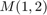
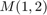

Symmetric Semidefinite Programs
This document illustrated how RepLAB can be used to solve Semidefinite Programs (SDP) subject to symmetries.
Contents
Preparation
Before using RepLAB commands, we first add the paths:
replab_addpaths
In order to solve convex optimization problems, the YALMIP interface is needed, (see the additional resources for more details).
Introduction
Semidefinite Programming is a form of optimization that admits semidefinite constraints (as in the condition that all eigenvalues of a matrix must be positive). It naturally arises in various fields, including operational research and polynomial optimization.
The ability to solve a semidefinite program depends heavily on:
- the size of the positive semi-definite (PSD) blocks
- the number of variables and constraints involved
It turns out that a positive semi-definite matrix that is invariant under some joint permutation of its lines and columns can be decomposed into a block diagonal form. This allows to:
- decompose PSD blocks into smaller PSD blocks
- set many variables to zero, hence reducing the number of variables in the problem
Here we show how RepLAB can be used to accomplish this simplification automatically.
A simple example
Let us consider a 3x3 matrix  with trace 1 that is symmetric under cyclic permutation of its indices, i.e. it satisfies . We are interested in some property of the matrix, for instance the smallest value of the off-diagonal element  for which the matrix must necessarily have a negative eigenvalue.
with trace 1 that is symmetric under cyclic permutation of its indices, i.e. it satisfies . We are interested in some property of the matrix, for instance the smallest value of the off-diagonal element  for which the matrix must necessarily have a negative eigenvalue.
Direct formulation
Using YALMIP, this problem can be solved directly:
M = sdpvar(3);
permutation = [2 3 1];
constraints = [trace(M) == 1, M(permutation, permutation) == M, M >= 0];
diagnostic = optimize(constraints, M(1,2), sdpsettings('verbose', 0))
MOpt = value(M)
diagnostic =
struct with fields:
yalmipversion: '20181012'
yalmiptime: 0.0372
solvertime: 0.0019
info: 'Successfully solved (MOSEK)'
problem: 0
MOpt =
0.3333 -0.1667 -0.1667
-0.1667 0.3333 -0.1667
-0.1667 -0.1667 0.3333
This shows that the lowest possible value of which is compatible with a matrix having only positive eigenvalues is  .
.
Symmetric formulation
Using RepLAB, we can solve this problem while taking into account the structure of the matrix .
We start by defining a matrix which satisfies the desired symmetry
MSym = replab.Sdprep.fromGenerators({permutation});
We can then perform the optimization with:
constraintsSym = [MSym(1,1)+MSym(2,2)+MSym(3,3) == 1, MSym >= 0];
diagnosticSym = optimize(constraintsSym, MSym(1,2), sdpsettings('verbose', 0))
MSymOpt = value(MSym)
diagnosticSym =
struct with fields:
yalmipversion: '20181012'
yalmiptime: 0.0373
solvertime: 0.0016
info: 'Successfully solved (MOSEK)'
problem: 0
MSymOpt =
0.3333 -0.1667 -0.1667
-0.1667 0.3333 -0.1667
-0.1667 -0.1667 0.3333
Again, we find the critical value of . This last formulation is however more concise as we now discuss.
Complexity comparison
The symmetric formulation of the above problem involves fewer variables and simpler constraints, as described in the following table:
| formulation |
direct |
symmetric |
| # variables |
6 |
2 |
| # equality constraints |
10 |
1 |
| size of PSD blocks |
3 |
1 and 2 |
To see this, we examine the variables involved.
In the first case, we have
M
Linear matrix variable 3x3 (symmetric, real, 6 variables)
Eigenvalues between [-1.3779e-08,0.5]
Coeffiecient range: 1 to 1
constraints
+++++++++++++++++++++++++++++++++++++++++++++++++++++++
| ID| Constraint| Coefficient range|
+++++++++++++++++++++++++++++++++++++++++++++++++++++++
| #1| Equality constraint 1x1| 1 to 1|
| #2| Equality constraint 3x3| 1 to 1|
| #3| Matrix inequality 3x3| 1 to 1|
+++++++++++++++++++++++++++++++++++++++++++++++++++++++
we see that it involves
- 6 variables
- 1+3x3=10 equality constraints
- 1 PSD block of size 3x3
In the second case, we have
MSym
MSym =
SDP matrix of size 3x3 with 2 variables.
Block structure: 1*1x1 + 1*2x2
and notice that this variable is made up of two PSD blocks:
- One block of size 1x1, which appears 1 time
- One block of size 2x2, which appears 1 time
Each block can be examined individually:
MSym.blocks{1}
Linear scalar (real, 1 variable)
Current value: 5.1133e-10
Coeffiecient range: 1 to 1
MSym.blocks{2}
Linear matrix variable 2x2 (symmetric, real, 1 variable)
Eigenvalues between [0.5,0.5]
Coeffiecient range: 1 to 1
and is found to contain exactly one variable.
The constraints this time are
constraintsSym
+++++++++++++++++++++++++++++++++++++++++++++++++++++++++++
| ID| Constraint| Coefficient range|
+++++++++++++++++++++++++++++++++++++++++++++++++++++++++++
| #1| Equality constraint 1x1| 1 to 2|
| #2| Element-wise inequality 1x1| 1 to 1|
| #3| Matrix inequality 2x2| 1 to 1|
+++++++++++++++++++++++++++++++++++++++++++++++++++++++++++
There are thus :
- 2 variables
- 1 equality constraint
- SDP blocks of size 1x1 and 2x2